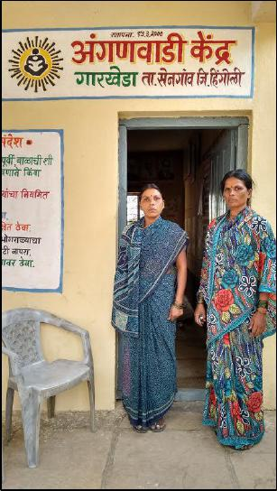

20
“Other religious processions, including Holi rally, are allowed through
the village into the Dalit colony, then why not Babasaheb’s procession?
They want to keep Babasaheb on the outskirts,” said Nanda Waghmare.
Garkheda (Hingoli)
In Hingoli district’s Garkheda village, a Dalit woman Mathura Khillare
did the unthinkable. In her capacity as an anganwadi worker, she
objected to waste water being directed from the sarpanch’s house to the
anganwadi doorstep two years ago. The backlash that followed drove
four Dalits’ households in the village to the precarious edge of survival.
Vidya at her Anganwadi
The Marathas pulled out their children from the anganwadi, leaving
Khillare with only one Dalit and three savarna children in her care. The